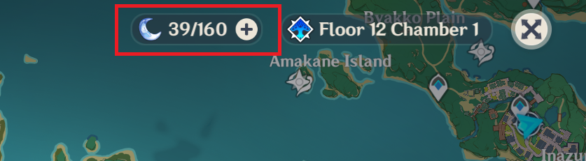

This site is a simple resin calculator
With this site you will know the time when you're resin will be stacked
You can also know the time that will be when your resin is stacked
- How do I see how much resin I have?
Well that's a weird question, seeing that you spend it every day (I think)
But, if you don't know how to do it, here it is:
All you need to do is open your map and, there it is!
Your resin number will be at the top of the map
After that you just need to insert your resin number in the text box
*The values here aren't exacts, but good approximations